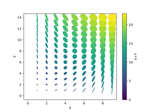
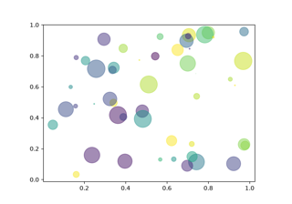

Shapes and collections# Arrow guide Arrow guide Reference for Matplotlib artists Reference for Matplotlib artists Line, Poly and RegularPoly Collection Line, Poly and RegularPoly Collection Compound path Compound path Dolphins Dolphins Mmh Donuts!!! Mmh Donuts!!! Ellipse with orientation arrow demo Ellipse with orientation arrow demo  Ellipse Collection Ellipse Collection Ellipse Demo Ellipse Demo Drawing fancy boxes Drawing fancy boxes Hatch demo Hatch demo Hatch style reference Hatch style reference Hatchcolor Demo Hatchcolor Demo Plot multiple lines using a LineCollection Plot multiple lines using a LineCollection Circles, Wedges and Polygons Circles, Wedges and Polygons PathPatch object PathPatch object Bezier curve Bezier curve  Scatter plot Scatter plot